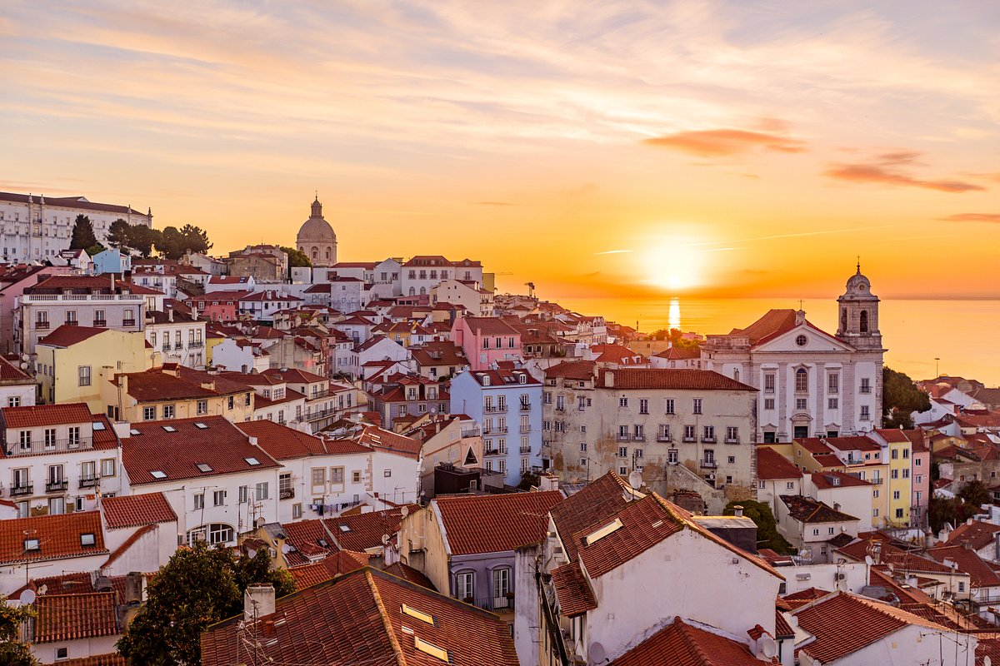

Une semaine à Lisbonne
Publié le

Lisbonne est une ville qui se découvre à pied, entre ses sept collines, ses ruelles pavées et ses miradouros qui offrent des vues imprenables sur le Tage. Dès le premier matin, nous avons pris le célèbre tramway 28 pour traverser les quartiers historiques de l'Alfama, de la Baixa et du Chiado. Le trajet est bruyant, bondé, mais c'est une excellente manière de prendre le pouls de la ville.
Côté gastronomie, impossible de repartir sans avoir goûté aux pastéis de nata de Belém, encore tièdes et saupoudrés de cannelle. Le soir, les petites tascas servent de la morue grillée et des sardines accompagnées d'un verre de vinho verde, souvent au son d'un fado joué dans la salle voisine.
Pour finir le séjour, une excursion d'une journée à Sintra s'impose : palais colorés, jardins mystérieux et forêts brumeuses donnent l'impression d'entrer dans un conte. Une semaine suffit à peine pour tout voir, mais largement assez pour avoir envie d'y revenir.